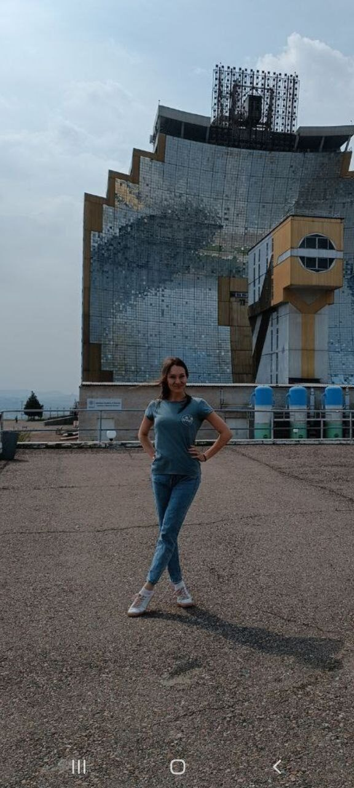
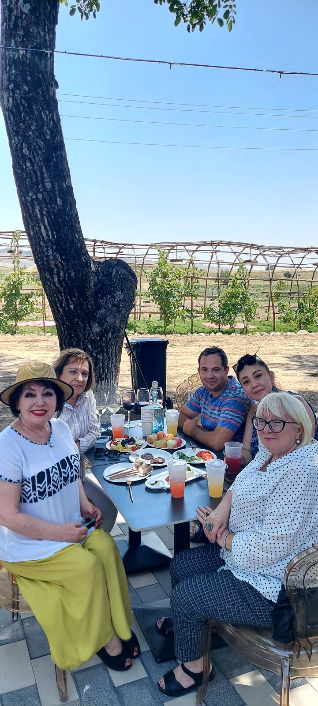

- Location
- Tashkent Region, Parkent District
- Duration
- 7 hours
- Format
- Private tour — 1 to 10 people
- Transport
- Sedan (1–4 people) or minibus (up to 10), air-conditioned
- Price
- €104 for 1–3 people · €30 per person for 4–10 people
- Children
- Welcome
- Languages
- English, Russian, Spanish
- Booking
- 22% prepayment, remainder on the day. Free cancellation up to 48 hours before.
€104 is about $115 USD; €30 is about $33 USD (approximate — exact amount depends on the exchange rate).
What This Tour Is
A full-day car and walking tour into the mountains of Parkent, one of the most underrated corners of the Tashkent region. This tour combines a unique scientific landmark, a sacred high-altitude mosque, local winemaking, and a proper mountain lunch into one memorable day.



The Route
Solar Furnace “Sun” Complex · 1–1.5 hours
One of only two solar furnace complexes in the world — the other is in southern France. A giant parabolic mirror focuses the sun to a single blazing point. Your guide explains the science and the history of the institute.
Ali Buva High-Mountain Mosque · 2 hours
At 1,500 meters above sea level, this sacred mosque is as much about the journey as the destination — calm, beautiful, with panoramic views of the mountains and valleys. Hear the legend of Ali Buva.
CRUCHON Winery, Zarkent · 1 hour incl. tasting
A family winery producing wines by traditional methods. Tour the production area and taste several varieties paired with local cheese — a genuine surprise for most visitors.
Ulfatlar Cafe, Sukok · 1–1.5 hours
Lunch at a beloved mountain cafe: shashlik (grilled meat skewers) and mastava (a rich meat and rice soup). Simple, delicious, completely authentic.
Champagne Parkent Vineyards · 30 minutes
Yes, this place is actually called Champagne. A walk through the vines, views of the foothills, and a chance to buy a bottle to take home.
What You Will Learn
- The history and science of the Solar Institute
- The legend of Ali Buva and the Islamic history of the region
- The winemaking traditions of Parkent and the Chirchik Valley
- Local mountain food culture and the story of these villages
Who This Tour Is For
- Nature lovers and those who enjoy scenic mountain landscapes
- Food and wine travelers — this tour has serious gastronomic content
- Cultural explorers who want to go beyond the standard Tashkent itinerary
- Families and small groups
What to Bring
- Warm layers — mountain weather can change quickly, especially spring and autumn
- Comfortable walking shoes with grip — some paths are uneven
- Water and sunscreen
- Cash for any personal purchases
Child seats available on request. First aid kit always in the vehicle. Altitude sickness remedies recommended for sensitive travelers.
Meeting Point
Agreed directly with your guide. You can discuss the exact pickup point after submitting your booking inquiry.